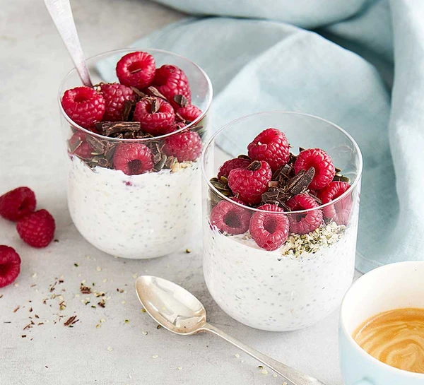

Raspberry Kefir Overnight Oatmeal

Description
A simple and delicious ready-to-go breakfast option.
Ingredients
- 125ml milk 1.5%
- 50gr kefir yoghurt
- 40gr oats
- 6 raspberries, crushed
- 1 tsp chocolate drops
- 1 tsp chia seeds
Steps
- Add all ingredients into a mason jar and mix well.
- Put lid on mason jar and put in refrigerator for at least 4 hours, ideally overnight.
- Enjoy!